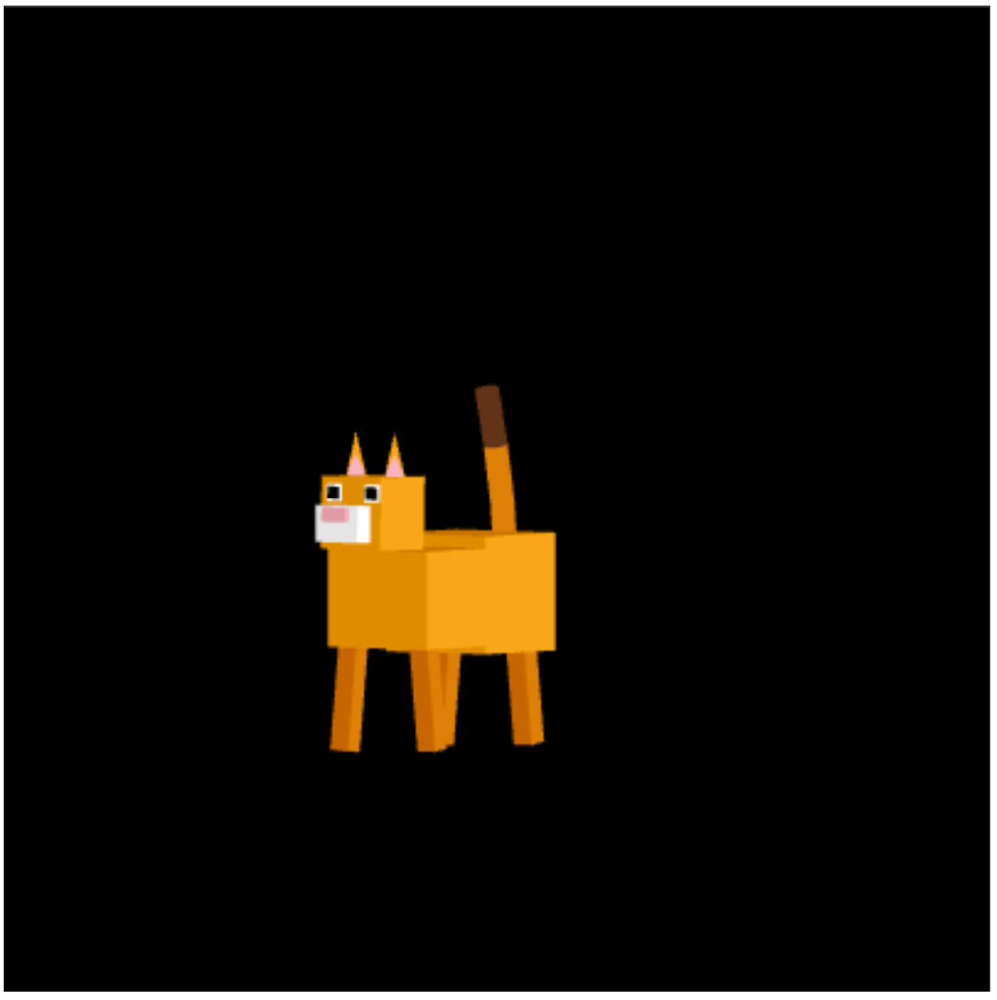

Where's Waldo Alfredo the Cat?

Controls:
- W: Forward
- A: Left
- S: Backward
- D: Right
- Q: Rotate Left
- E: Rotate Right
- Z: Up
- X: Down
- Mouse: Double Tap Hold to Move POV
NOTE: If you are inside a brick box (and you don't see the sky), hold W to get out (to pass through buildings).
Hints to find Alfredo
- Alfredo is really small and loves to sunbathe in the intersection between four squares.
- You can fly upwards to get a better glimpse of where those grassy squares may be, but keep in mind that Alfredo is really small.
- He's as small as an ant.
- The ground may hinder your perception of how large the space is for Alfredo.
Where's Alfredo?
- Refresh the page and only hold W until you see him (focus on the ground).
- He's located at the middle of the map.
- Don't forget that Alfredo is on the small end.
Notes
- Randomized Generated Buildings (refresh for new map).
- Did not implement adding/destroying blocks.
- Alfredo is a little deformed.